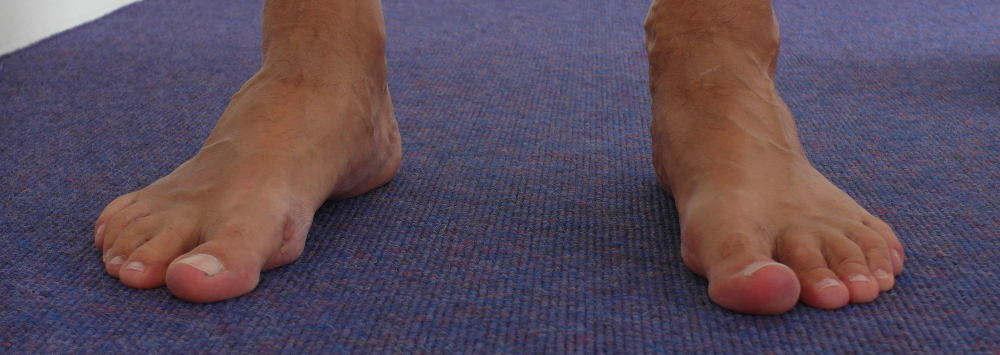

Feet


Feel Your Feet
- Stand on your feet.
- Experience the contact with the ground.
- Feel into the soles of the feet.
- Feel the knees.
- The hips.
- The spine.
- Shoulders.
- Neck.
- Head.
- Feel the connection between the top of the head and the feet.